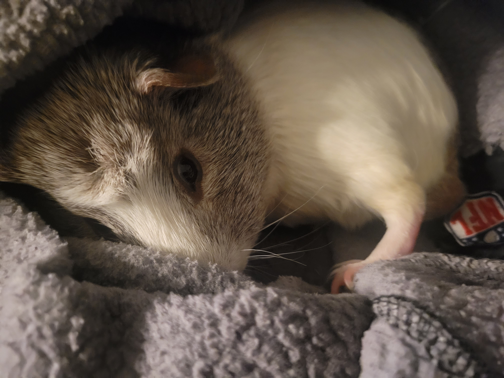
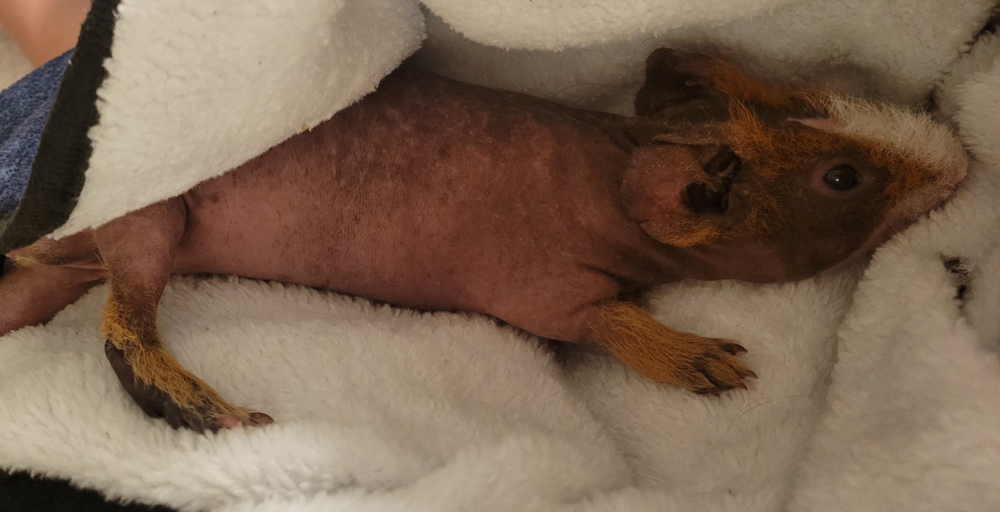
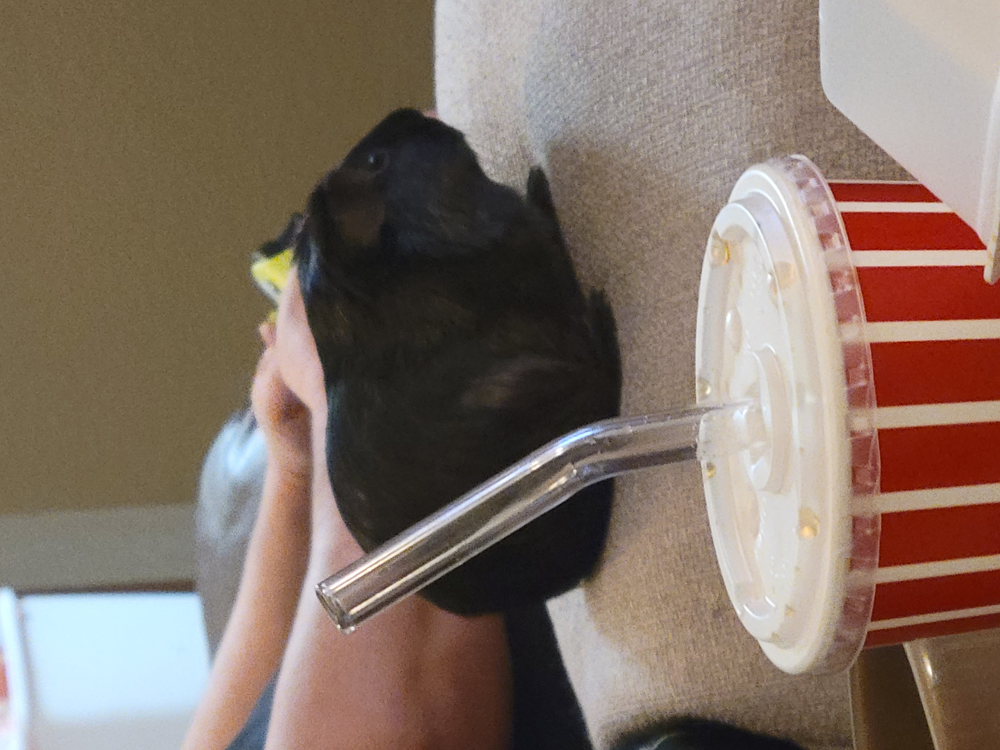

About Me
Hi my name is Mariposa Wheat, i'm 19 years old, and I am very much excited to do web development!
I have 3 guinea pigs, Pua, Ame, and Gus Gus.



They love their hay and wheek whenever they hear a slight crinkle of a bag, or typing for some reason.
I love to draw, but more on the digital side for the most part now,
I started drawing digitally when I went into Digital arts school, and I loved it ever since as a hobby.
I also love to bake as well! But I love baking more breads, bagels than cake and cupcakes.
I have 2 siblings, one younger sister, and one older brother (I'm a middle child yippiee)
My dad pointed me to this deep dive program, and I was going to do digital media first, then data science,
then I got into web development.